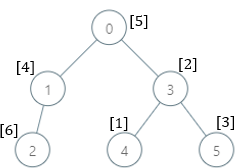

There is a family tree rooted at 0 consisting of n nodes numbered 0 to n - 1. You are given a 0-indexed integer array parents, where parents[i] is the parent for node i. Since node 0 is the root, parents[0] == -1.
There are 105 genetic values, each represented by an integer in the inclusive range [1, 105]. You are given a 0-indexed integer array nums, where nums[i] is a distinct genetic value for node i.
Return an array ans of length n where ans[i] is the smallest genetic value that is missing from the subtree rooted at node i.
The subtree rooted at a node x contains node x and all of its descendant nodes.
Example 1:
Input: parents = [-1,0,0,2], nums = [1,2,3,4] Output: [5,1,1,1] Explanation: The answer for each subtree is calculated as follows: - 0: The subtree contains nodes [0,1,2,3] with values [1,2,3,4]. 5 is the smallest missing value. - 1: The subtree contains only node 1 with value 2. 1 is the smallest missing value. - 2: The subtree contains nodes [2,3] with values [3,4]. 1 is the smallest missing value. - 3: The subtree contains only node 3 with value 4. 1 is the smallest missing value.
Example 2:
Input: parents = [-1,0,1,0,3,3], nums = [5,4,6,2,1,3] Output: [7,1,1,4,2,1] Explanation: The answer for each subtree is calculated as follows: - 0: The subtree contains nodes [0,1,2,3,4,5] with values [5,4,6,2,1,3]. 7 is the smallest missing value. - 1: The subtree contains nodes [1,2] with values [4,6]. 1 is the smallest missing value. - 2: The subtree contains only node 2 with value 6. 1 is the smallest missing value. - 3: The subtree contains nodes [3,4,5] with values [2,1,3]. 4 is the smallest missing value. - 4: The subtree contains only node 4 with value 1. 2 is the smallest missing value. - 5: The subtree contains only node 5 with value 3. 1 is the smallest missing value.
Example 3:
Input: parents = [-1,2,3,0,2,4,1], nums = [2,3,4,5,6,7,8] Output: [1,1,1,1,1,1,1] Explanation: The value 1 is missing from all the subtrees.
Constraints:
n == parents.length == nums.length2 <= n <= 1050 <= parents[i] <= n - 1 for i != 0parents[0] == -1parents represents a valid tree.1 <= nums[i] <= 105nums[i] is distinct.